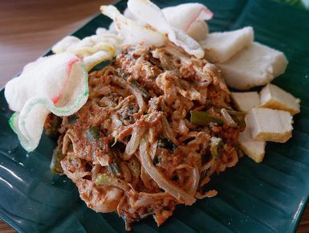

Karedok adalah makanan khas Sunda yang disajikan dengan sayur-sayuran mentah. Karedok disirami bumbu kacang yang melimpah. Karedok juga dilengkapi dengan tambahan kerupuk bawang di atasnya.

Lotek
Lotek merupakan sajian makanan dari sayur-sayuran yang sudah direbus seperti bayam, kapri dan kacang panjang. Lotek disirami oleh bumbu kacang dan kerupuk dalam memakannya, selain itu lotek juga dinikmati bersamaan dengan lontong, nasi ataupun mi.
Soto Bandung
Soto Bandung merupakan masakan khas Sunda yang sangat minimalis, umumnya hanya menggunakan daging sapi has dalam atau tetelan. Yang membedakannya dari yang lain yaitu penambahan kacang kedelai goreng dan juga lobak di kuahnya.